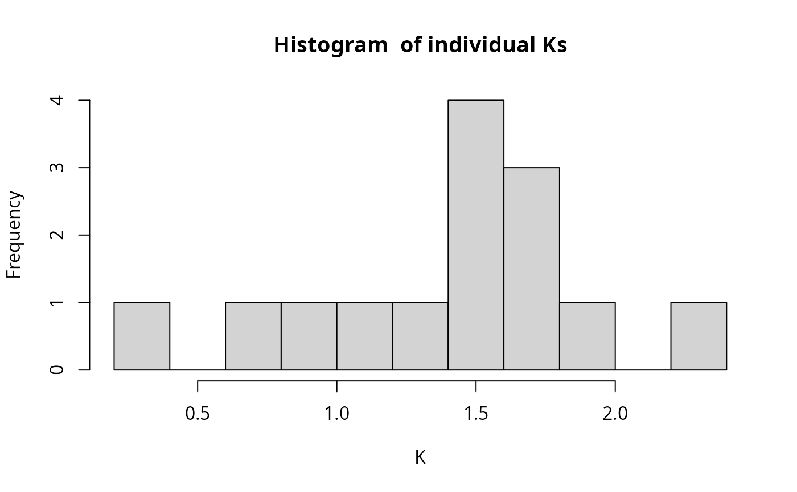
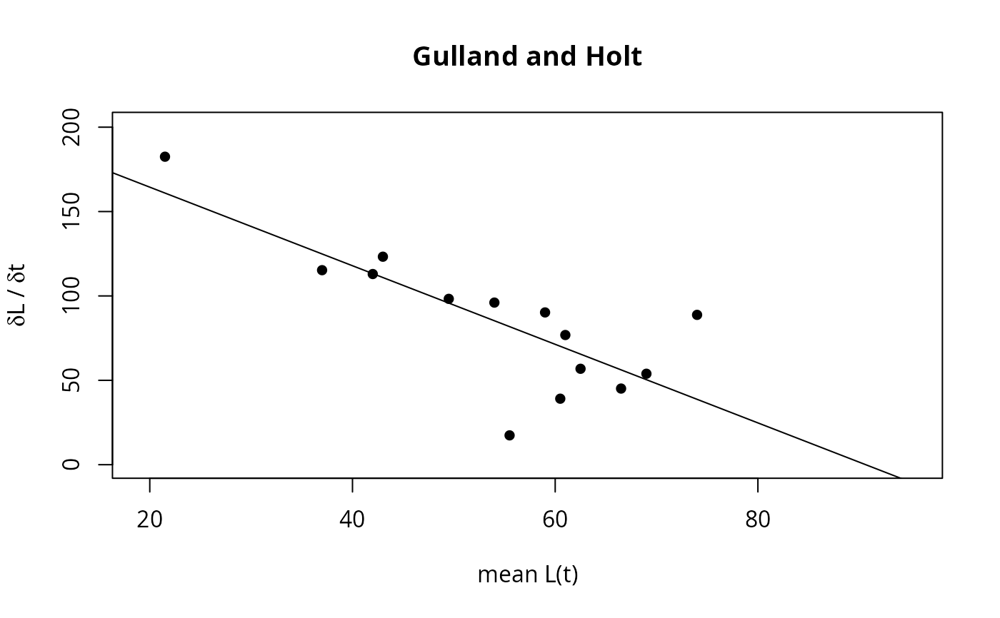
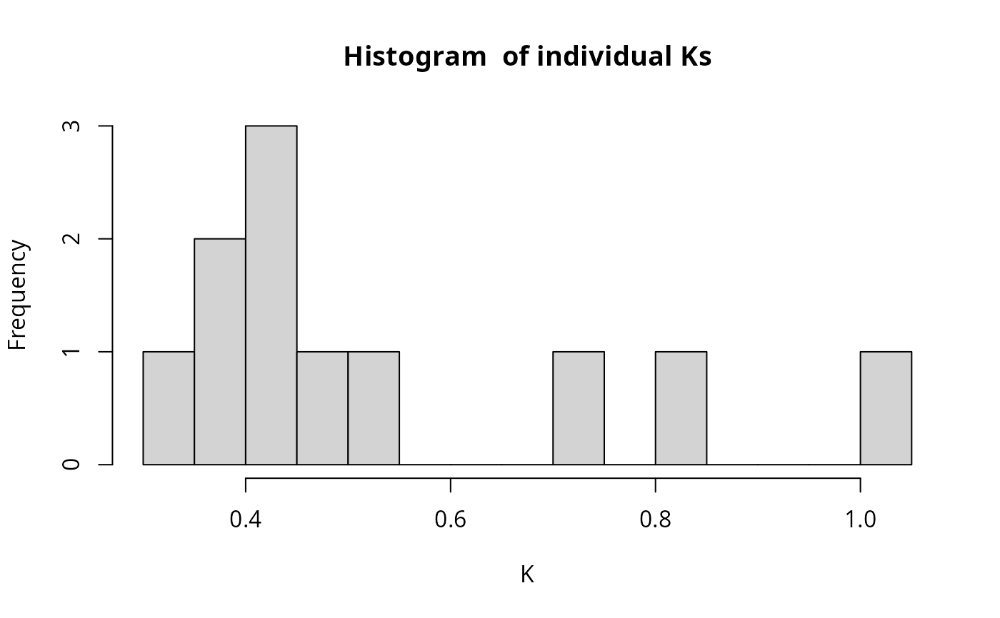
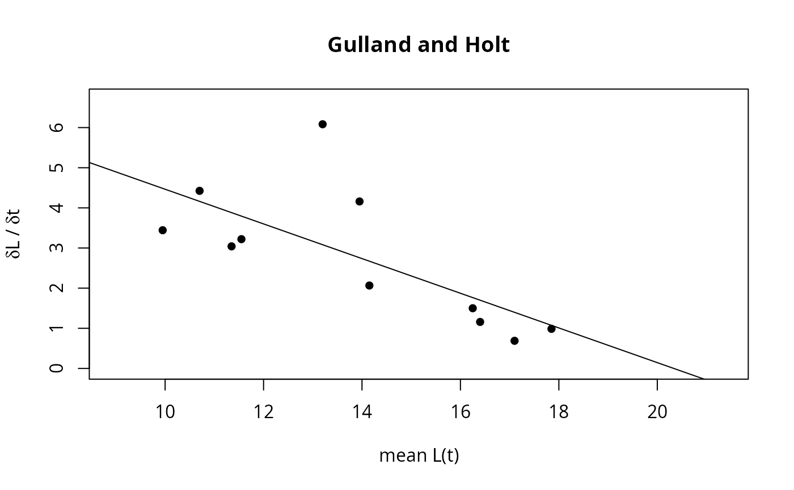

This function estimates growth parameters from tagging data. Munro plot is applied
Usage
growth_tagging(param, method, Linf_range = c(5, 600), time_unit = "year")Arguments
- param
a list consisting of following parameters:
L1: length at tagging [cm],
L2: length at recapture [cm],
delta_t: time interval between tagging ang recapture (instead two vectors with t1 (age at tagging) and t2 (age at recapture) can be provided.
- method
indicating which of following methods should be applied: "GullandHolt" or "Munro".
- Linf_range
two values indicating the lower and upper limits of the range, in which the optimise searches for the Linf value with the best fit (lowest CV value ),
- time_unit
indicating the unit of the time interval, either "year", "month", "week", or "day"
Value
A list with the input parameters and following parameters:
x: independent variable used for regression analysis,
y: dependent variable used for regression analysis,
reg_coeffs: regression coefficients,
r2: r squared of regression analysis,
Linf: infinite length for investigated species in cm [cm],
K: growth coefficent for investigated species per year [1/year],
conf_int_K: confidence intervals of K (only if Gulland Holt method was applied).
Details
If Munro plot is applied the optimal Linf value is found by minimizing the coefficient of variation (CV = sd(K)/mean(K)). For this iterative method the optimise function is applied. The histogram of the individual K values allows to distinguish potential differences in growth performance between individuals. t0 can not be estimated by Munro plot, neither by the Gulland Holt method.
References
Sparre, P., Venema, S.C., 1998. Introduction to tropical fish stock assessment. Part 1. Manual. FAO Fisheries Technical Paper, (306.1, Rev. 2). 407 p.
Sparre, P., Venema, S.C., 1999. Introduction to tropical fish stock assessment. Part 2. Excercises. FAO Fisheries Technical Paper, (306.2, Rev. 2). 94 p.
Wolff, M., 1984. Early setback for scallop culture in Peru.
Examples
# from Wolff (1984)
dat <- list(L1 = c(40,46,29,30,18,31,48,49,59,58,61,65,57,55),
L2 = c(85,53,55,56,25,43,70,59,62,80,72,83,65,56),
delta_t = c(289,26,84,77,14,38,89,38,28,149,89,74,38,21))
growth_tagging(param = dat, "Munro", time_unit = "day", Linf_range=c(80,120))

#> $L1
#> [1] 40 46 29 30 18 31 48 49 59 58 61 65 57 55
#>
#> $L2
#> [1] 85 53 55 56 25 43 70 59 62 80 72 83 65 56
#>
#> $delta_t
#> [1] 289 26 84 77 14 38 89 38 28 149 89 74 38 21
#>
#> $indi_Ks
#> [1] 1.1926083 1.5335168 1.5945522 1.7647035 1.9815345 1.5069473 1.6739771
#> [8] 1.6142026 0.7360575 1.2325037 0.9612689 2.2791955 1.4624556 0.2989333
#>
#> $Linf
#> [1] 113.6447
#>
#> $K
#> [1] 1.416604
#>
growth_tagging(param = dat, "GullandHolt", time_unit = "day")

#> $L1
#> [1] 40 46 29 30 18 31 48 49 59 58 61 65 57 55
#>
#> $L2
#> [1] 85 53 55 56 25 43 70 59 62 80 72 83 65 56
#>
#> $delta_t
#> [1] 289 26 84 77 14 38 89 38 28 149 89 74 38 21
#>
#> $x
#> [1] 62.5 49.5 42.0 43.0 21.5 37.0 59.0 54.0 60.5 69.0 66.5 74.0 61.0 55.5
#>
#> $y
#> [1] 56.83391 98.26923 112.97619 123.24675 182.50000 115.26316 90.22472
#> [8] 96.05263 39.10714 53.89262 45.11236 88.78378 76.84211 17.38095
#>
#> $reg_coeffs
#> Estimate Std. Error t value Pr(>|t|)
#> (Intercept) 211.01110 29.8565751 7.067492 1.305364e-05
#> x -2.32804 0.5367441 -4.337336 9.661408e-04
#>
#> $r2
#> [1] 0.6105474
#>
#> $Linf
#> [1] 90.63897
#>
#> $K
#> [1] 2.32804
#>
#> $conf_int_K
#> [1] 1.158575 3.497505
#>
# from Sparre and Venema (1999)
dat <- list(L1 = c(9.7,10.5,10.9,11.1,12.4,12.8,14.0,16.1,16.3,17.0,17.7),
L2 = c(10.2,10.9,11.8,12.0,15.5,13.6,14.3,16.4,16.5,17.2,18.0),
delta_t = c(53,33,108,102,272,48,53,73,63,106,111))
growth_tagging(param = dat, "Munro", time_unit = "day", Linf_range = c(10,40))
#> Warning: NaNs produced
#> Warning: NaNs produced

#> $L1
#> [1] 9.7 10.5 10.9 11.1 12.4 12.8 14.0 16.1 16.3 17.0 17.7
#>
#> $L2
#> [1] 10.2 10.9 11.8 12.0 15.5 13.6 14.3 16.4 16.5 17.2 18.0
#>
#> $delta_t
#> [1] 53 33 108 102 272 48 53 73 63 106 111
#>
#> $indi_Ks
#> [1] 0.3700342 0.5170745 0.3850547 0.4183077 0.8072223 1.0056692 0.4045988
#> [8] 0.4991084 0.4056202 0.3193788 0.7033717
#>
#> $Linf
#> [1] 19.25785
#>
#> $K
#> [1] 0.5304946
#>
growth_tagging(param = dat, "GullandHolt", time_unit = "day")

#> $L1
#> [1] 9.7 10.5 10.9 11.1 12.4 12.8 14.0 16.1 16.3 17.0 17.7
#>
#> $L2
#> [1] 10.2 10.9 11.8 12.0 15.5 13.6 14.3 16.4 16.5 17.2 18.0
#>
#> $delta_t
#> [1] 53 33 108 102 272 48 53 73 63 106 111
#>
#> $x
#> [1] 9.95 10.70 11.35 11.55 13.95 13.20 14.15 16.25 16.40 17.10 17.85
#>
#> $y
#> [1] 3.4433962 4.4242424 3.0416667 3.2205882 4.1599265 6.0833333 2.0660377
#> [8] 1.5000000 1.1587302 0.6886792 0.9864865
#>
#> $reg_coeffs
#> Estimate Std. Error t value Pr(>|t|)
#> (Intercept) 8.7839667 2.0466580 4.291858 0.00201457
#> x -0.4319485 0.1450891 -2.977125 0.01552184
#>
#> $r2
#> [1] 0.496173
#>
#> $Linf
#> [1] 20.33568
#>
#> $K
#> [1] 0.4319485
#>
#> $conf_int_K
#> [1] 0.1037341 0.7601629
#>